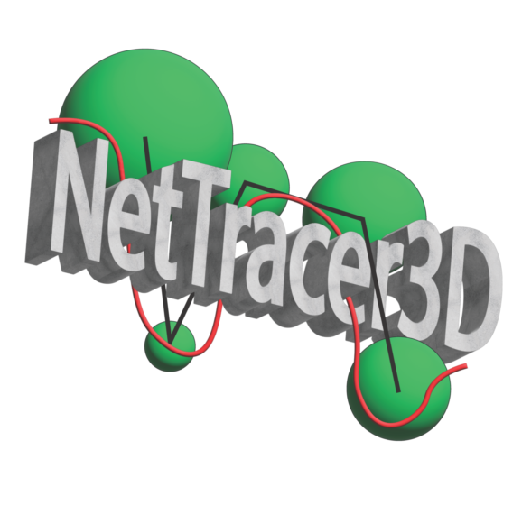

NetTracer3D documentation
Welcome to NetTracer3D
{kind=link}
NetTracer3D is a powerful tool for 2D and 3D analysis of microscopic/medical images. It supports generation of 3D networks showing relationships between objects in three dimensional space, either by proximity, grouped by interactivity with another object such as nerves, or between branches of objects like vessels or nerves.
Key Features
Algorithms to group objects into three-dimensional networks, abstracting big data into a manageable form for analysis.
Segmentation using machine learning
Fully functional, user friendly GUI supporting interactive 2D and 3D displays.
A plethora of tools for 3D image analysis and modification, such as branch labeling and 3D watershedding.
A suite of tools for analyzing and exporting network data.
Getting Started
To get started with NetTracer3D, check out the Installation guide and then proceed to the Quickstart - Segmenting Data and Generating Connectivity Networks tutorial.
A youtube tutorial on installing and using the program can be found here: https://www.youtube.com/watch?v=_4uDy0mzG94&list=PLsrhxiimzKJMZ3_gTWkfrcAdJQQobUhj7
User Guide:
Detailed Function Guide:
- Right Clicking - All Options Available by Right Clicking in the GUI
- All File Menu Options
- All Analyze Menu Options
- ‘Analyze -> Network -> Show Network’
- ‘Analyze -> Network -> Generic Network Report’
- ‘Analyze -> Network -> Create Communities based on Network’
- ‘Analyze -> Network -> Create Communities based on Nodes Immediate Neighbors’
- ‘Analyze -> Network -> Create Communities Based on Cuboidal Proximity Cells?’
- ‘Analyze -> Network -> Calculate Composition of Network Communities (And UMAP)’
- ‘Analyze -> Network -> Convert Network Communities Into Supercommunities (Also Returns Compositional Heatmaps)’
- ‘Analyze -> Stats -> Network Related -> Calculate Generic Network Stats’
- ‘Analyze -> Stats -> Network Related -> Network Statistics Histograms’
- ‘Analyze -> Stats -> Network Related -> Radial Distribution Analysis’
- ‘Analyze -> Stats -> Network Related -> Community Cluster Heatmap’
- ‘Analyze -> Stats -> Spatial -> Identity Distribution of Neighbors’
- ‘Analyze -> Stats -> Spatial -> Ripley Clustering Analysis’
- ‘Analyze -> Stats -> Spatial -> Average Nearest Neighbors (With Clustering Heatmaps)’
- ‘Analyze -> Stats -> Spatial -> Calculate Node < > Edge Interactions’
- ‘Analyze -> Stats -> Morphological -> Calculate Volumes’
- ‘Analyze -> Stats -> Morphological -> Calculate Radii’
- ‘Analyze -> Stats -> Morphological -> Calculate Surface Area’
- ‘Analyze -> Stats -> Morphological -> Calculate Sphericities’
- ‘Analyze -> Stats -> Morphological -> Calculate Branch Stats’
- ‘Analyze -> Stats -> Significance Testing’
- ‘Analyze -> Stats -> Show Identities Violin/UMAP/Assign Intensity Neighborhoods’
- ‘Analyze -> Data/Overlays -> Get Degree Information’
- ‘Analyze -> Data/Overlays -> Get Hub Information’
- ‘Analyze -> Data/Overlays -> Get Mother Nodes’
- ‘Analyze -> Data/Overlays -> Code Communities’
- ‘Analyze -> Data/Overlays -> Code Identities’
- ‘Analyze -> Data/Overlays -> Centroid UMAP’
- ‘Analyze -> Randomize -> Generate Equivalent Random Network’
- ‘Analyze -> Randomize -> Scramble Nodes (Centroids)’
- Next Steps
- All Process Menu Options
- ‘Process -> Calculate Network -> Calculate Connectivity Network…’
- ‘Process -> Calculate Network -> Calculate Proximity Network…’
- ‘Process -> Calculate Network -> Calculate Branchpoint Network…’
- ‘Process -> Calculate Network -> Calculate Branch Adjacency Network’
- ‘Process -> Calculate Network -> Calculate Centroids…’
- ‘Process -> Image -> Resize’
- ‘Process -> Image -> Clean Segmentation’
- ‘Process -> Image -> Dilate’
- ‘Process -> Image -> Erode’
- ‘Process -> Image -> Fill Holes’
- ‘Process -> Image -> Binarize’
- ‘Process -> Image -> Label Objects’
- ‘Process -> Image -> Neighborhood Labels’
- ‘Process -> Image -> Threshold/Segment’
- ‘Process -> Image -> Mask Channel’
- ‘Process -> Image -> Crop Channels’
- ‘Process -> Image -> Channel dtype’
- ‘Process -> Image -> Skeletonize’
- ‘Process -> Image -> Binary Watershed’
- ‘Process -> Image -> Gray Watershed’
- ‘Process -> Image -> Invert’
- ‘Process -> Image -> Z-Project’
- ‘Process -> Generate -> Generate Nodes (From Node Centroids)’
- ‘Process -> Generate -> Generate Nodes (From ‘Edge’ Vertices)’
- ‘Process -> Generate -> Label Branches’
- ‘Process -> Generate -> Trace Filaments’
- ‘Process -> Generate -> Generate Voronoi Diagram’
- ‘Process -> Generate -> Generate Convex Hull’
- ‘Process -> Generate -> Generate Artificial Hexagonal Nodes’
- ‘Process -> Modify Network/Properties’
- Next Steps
- All Image Menu Options
- ‘Image -> Properties’
- ‘Image -> Adjust Brightness/Contrast’
- ‘Image -> Channel Colors’
- ‘Image -> Overlays -> Create Network Overlay’
- ‘Image -> Overlays -> Create ID Overlay’
- ‘Image -> Overlays -> Color Nodes (or edges)’
- ‘Image -> Overlays -> Shuffle’
- ‘Image -> Select Objects’
- ‘Image -> Show 3D (Napari)’
- ‘Image -> Cellpose’